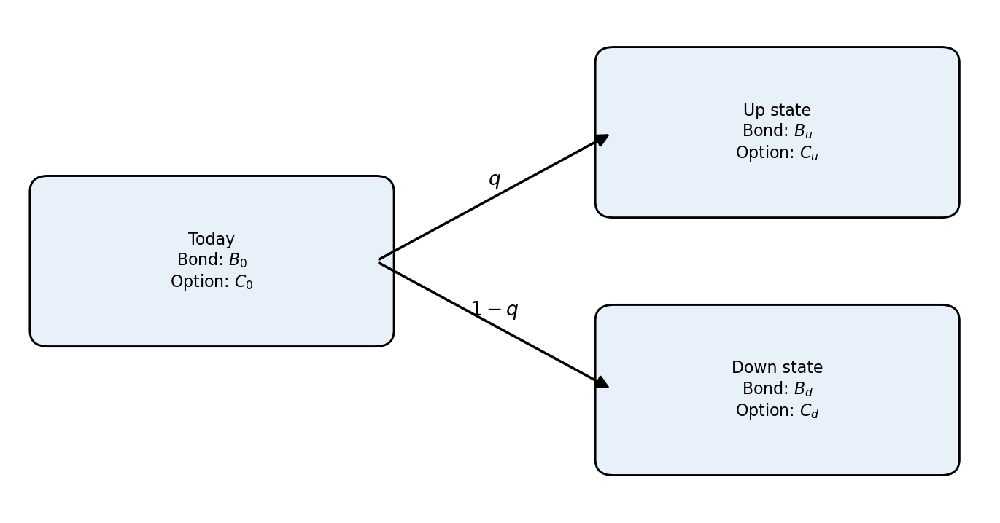

Introduction to Option Pricing
Before analyzing bonds with embedded options, it is useful to understand the basic option pricing logic. An option gives one party a right, but not an obligation, to take an action in the future. The value of that right depends on what the underlying asset may be worth at the exercise date.
In equity markets, the underlying asset is often a stock. In fixed income, the underlying asset may be:
- a bond;
- a future bond price;
- a future interest rate;
- a future yield curve;
- a swap rate;
- a mortgage pool whose cash flows depend on future rates.
The important idea is the same: the option payoff depends on future states, so today’s valuation must account for multiple possible future outcomes.
1 A one-period binomial tree
A simple way to introduce option pricing is with a binomial tree. Suppose a bond is worth \(B_0\) today. Over one period, it can move to one of two possible values:
- an up state, \(B_u\);
- a down state, \(B_d\).
An option on the bond has a payoff in each state. For example, a call option with strike price \(K\) has payoff:
\[ C_u = \max(B_u-K,0), \qquad C_d = \max(B_d-K,0). \]
The option value today is the discounted expected payoff under risk-neutral probabilities:
\[ C_0 = \frac{qC_u+(1-q)C_d}{1+r}, \]
where \(q\) is the risk-neutral probability of the up state and \(r\) is the one-period risk-free rate. For a tradable bond with no payment during this interval,
\[ q=\frac{(1+r)B_0-B_d}{B_u-B_d},\qquad B_d<(1+r)B_0<B_u. \]
The inequality rules out arbitrage and gives \(0<q<1\). Any coupon within the interval must be included in the replication cash flows. At a callable-bond decision below, continuation and redemption values are measured immediately after the coupon; the coupon is accounted for separately.
TipIntuition
The risk-neutral probability is not a forecast of what will actually happen. It is the probability that makes the model consistent with no-arbitrage pricing. We use it to price cash flows consistently with today’s market prices.
2 Backward induction
For options with several possible exercise dates, the tree has many steps. The pricing method works backward:
- Build possible future states of the underlying asset.
- Compute the option payoff at the final nodes.
- Move one step backward by discounting the expected future option value.
- If the option can be exercised early, compare the continuation value with the exercise value at each node.
- Continue backward until reaching today’s value.
This is called backward induction. It is central for valuing callable and putable bonds because the exercise decision must be checked at each possible future call or put date.
3 Why this matters for fixed income
For a plain fixed-rate bond, the cash flows are fixed, so we can usually value the bond directly from today’s discount curve:
\[ P = \sum_i CF_i P(0,t_i). \]
For a bond with an embedded option, the future cash flows depend on future rates. The tree must therefore generate future interest-rate states, future discount factors, and future bond values. At each exercise date, the model asks whether the option should be exercised.
For a callable bond, the issuer owns the option. At a future call date, the model produces a future yield curve \(P(t,T)\). That curve is used to value the remaining coupon and principal payments:
\[ V_{\text{continue}}(t) = \sum_i CF_i \times P(t,t_i). \]
The issuer compares this continuation value with the call price:
- the value of leaving the bond outstanding;
- the call price.
If rates have fallen, the old high-coupon bond is valuable to investors but expensive for the issuer to keep outstanding. The continuation value is likely to exceed the call price, so the issuer calls the bond. If rates have risen, the continuation value is usually below the call price, so the issuer does not call.
From the bondholder’s perspective:
\[ V(t) = \min\left(V_{\text{continue}}(t), \text{call price}\right). \]
The minimum appears because the issuer controls the call option. The bondholder receives the lower of keeping the valuable bond alive or being paid the call price.
| Step | Valuation or decision |
|---|---|
| 1. Generate the future curve | Obtain discount factors \(P(t,T)\) for remaining payments. |
| 2. Value remaining cash flows | Sum each promised payment times its discount factor. |
| 3. Compare ex-coupon values | Compare continuation value with the redemption price. |
| 4. Continuation exceeds call price | Issuer calls; investor receives the call price. |
| 5. Continuation is below call price | Issuer leaves the bond outstanding. |
| 6. Values are equal | Issuer is indifferent in the frictionless model. |
This is why the short-rate models discussed in Lecture 7 are useful. They provide the future rate tree needed to value fixed-income options and bonds with embedded options.
NoteBridge to Lecture 8
The next step is to apply this logic directly to bonds with embedded options. The key idea will be the same: build future interest-rate states, value the bond at future nodes, apply the exercise rule, and work backward to today.